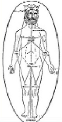
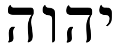
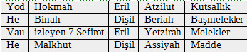
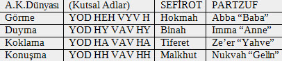
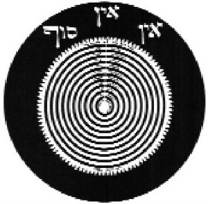
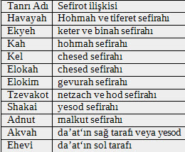

1492 Yılında İspanya Kralı Ferdinand’ın Yahudileri İspanyadan kovma emri üzerine, Yahudiler bir kez daha geleneksel kaderleri olan sürgün ve göç ile karşı karşıya kalmışlardı. Bu durum kutsal metinlerdeki kehanetleri yeniden gündeme getirdi. Dünyanın sonunun yaklaştığı, kurtarıcı Mesih’in geleceği üzerine söylentiler ile çalkalanan endişeli, tedirgin ve sıkıntılı mânevî ortam, Kabala’nın yeniden ve etkili biçimde gündeme gelmesine yol açtı. İşte bu dönemde Kabala merkezi durumunda olan Safed’de en büyük Kabala bilgesi Isaac ben Solomon Luria’nın okulu ve öğretisi tüm dünyanın ilgi odağı oldu.
İsaac ben Solomon Luria’nın yaşamı hakkındaki bilgileri, ölümünden sonra yazılan ve yazarı bilinmeyen “Ari’nin Yaşamı” (Toledot ha-Ari) adlı biyografik kitaptan öğreniyoruz.
1534 yılında Kudüs’de dünyaya gelen Isaac ben Solomon Luria, daha sonra ailesi ile birlikte Mısır’a göç etmiş, orada Yahudi rabbilerden köklü bir dinsel eğitim almıştır. Yaşı ilerledikçe Yahudi hukuku konusunda derinleşen Luria’nın bu çalışmaları sırasında, Yahudi mistisizmi çok ilgisini çekmiş ve bundan sonra tüm yaşamını Kabala ve Zohar çalışmalarına adamıştır. Luria, çalışmalarını yazıya dökmeye önce Zohar’ın “Gizlilik Kitabı”’na (Sifra di-tzeni’uta) bir yorum yazarak başlamıştır.
Luria, 1570 yılında, çalışmalarından etkilendiği yaşayan en büyük kabalacı olan Cordovero’nun okuluna katılmak üzere Kabala merkezi Safed’e gelir. Burada Cordovero’nun öğrencisi olan Luria, eski kabala sistemini geliştirerek, kendi mistik okulunu kurar. Bu okulun seçkin öğrencilerinden olan Hayyim Vital’in sonradan yazdığına göre; Luria’nın geliştirdiği özel mistik metodlar “Kavvanot“ (meditasyon) ve “Yihudim“ (birleştirme) ile bedeni saran kaba kabuktan (Kelipot) kurtulmayı ve içsel arınmayı esas alan törensel çalışmalar, sadece Luria’nın öğrencilerinden oluşan kapalı mistik guruplar tarafından uygulanıyordu.
Luria’nın geliştirdiği ancak onun 1572 yılında bir salgında ölümünden sonra, öğrencisi Hayyim Vital tarafından Luria Kabalası adıyla, dünyaya sunulan Kabala sistemi, XVII. yüz yılda gelişen Sabetay Sevi, XVIII. yüz yılda ortaya çıkan Hasidizm ve tüm Yahudi mistisizmini derinden etkilemiştir.
İsaac Luria’da Evren yaratılışı:
İsaac Luria’nın Kabalası, eksiksiz bir yaratılış kuramı ortaya koymaktadır. Aşağıda ayrıntılı biçimde görüleceği gibi bu kuram üç evrede ele alınmaktadır. İlk aşamada, tüm evreni kaplayan Sonsuz “Ain Sof” kendi içine doğru büzülmüştür, bu evre “Tzimtzum” (büzülme/çekilme) adıyla anılır. Ancak sonsuzun sonluda kapsanması olanağı olmadığı için ikinci aşamada kendini sınırlayan sınırları/kapları kırarak ve içindeki uyum da bozularak evrene yayılmıştır. Bu evre de “Shevirat ha-Kelim“ (kapların kırılması) olarak adlandırılır. Ve üçüncü aşamada ise insanoğlunun mistik çabaları “kavannot” ile kutsal ışığın en yüksek formu “Adam Kadmon“’un yeniden doğması “Tiqqun” (restorasyon, tamirat) ile gerçekleşecektir.
Herşey, hiçbirşey (Ayin)’den, bir şey (Yesh)’in ve onun örülmesiyle meydana gelen sonsuzluk (Ain-Sof)’dan meydana çıkmıştır. Ain-Sof, bu meydana çıkış olayını, kendisinden bile gizli olan ve merkezdeki bu metafiziksel boşluktan bir tzimtzum hareketiyle gerçekleştirdi. Başlangıçta varolan adam (Primordial Man), Adam Kadmon ve bütün sayısız dünyalar (ki Olamot-Alemler olarak adlandırılır) bu boşluktan ortaya çıktı.
İlk Adem’in gözlerinden, ağız, burun ve kulaklarından çıkıp geri dönen ışıklar, 10 ilkörnek (archetypal) değeri yani Sefirotu ve 22 kutsal harfi (Otiyot yesod) oluştururlar. Bunlar, Evrenin temel ilkelerinin yapı taşları ve herşeyin yapısal elemanlarıdır.
Bu ışımalar, yayılmanın ötesindeki sonsuzluğun (Ain-Sof) ışıklarını da kapsayan ilk kab’ı (Kelim) biçimlendirir. Ancak bu ilk kap ne bu yayılmaları ve ne de Kapların kırılması (Shevirat ha-Kelim) olarak bilinen kozmik felâketi kapsayamaz. Bu kap parçalanmış ve değişmiştir. İlkin anlamlı gruplar olarak toplanan harfler, aslında anlamsızlığın kutsal metinleriydi. Evrendeki bu kopma, Tanrı ile ilk adem gibi, erkeklikle dişiliği ve tüm özelliklerin karşıtlıklarını ortaya çıkardı.
Kırık kapların Metafiziksel boşlukta yuvarlanması, Kutsal ışığın görkemli kıvılcımları gibidir. Önceden karanlığın katmanlarında örtülü dururken yakalanan bu kıvılcımlar, Sitra Acra’ya, yani diğer yana düşerler ki bu dünya, Bilgeliğin, Anlayışın, bilişin, Aşk’ın, Adaletin, Güzelliğin v.s dünyasıdır. Kırılmadan sonra, örtülü duran ışıklar ve kaplar Kellipot (kabuklular) olarak biraraya gelerek birleştiler ve sonuçda; bizim dünyamız (assiyah-yapma dünyası)’a kondular. Bu dünya, hem olabilecek en kötü dünyadır hem de paradoksal olarak aynı zamanda bu alanın kurtuluşunu sağlayabilecek en iyi dünyadır.
Kapların kırılması sonucunda, Primordial Adam da kendi ruhunun çokluğu içine kısmen kırılmıştı. Bu sırada, yaşadığımız dünyanın biçimleri aynı örnekler veya Kellipot olarak, “Diğer yan”da sürgündeydi. Bu yüzden, dünyada yaşayan her kadın ve erkeğin görevi, kendi kıvılcımları‘nın (netzotzim) özüyle, gerçek yaşamda karşılaşma şansını yakalamak ve o ruhları yükseltmektir. Aynı zamanda, İlk Adem‘ın beş partzufim (Tanrının kişilik olarak yüzü) figürünü ve Sefirotu yeniden yapılandırmaktır. İnsan ve dünya, Karı koca arasındaki evlilik ilişkisinde olduğu gibi karşıtıyla uyumunu yeniden kurmalıdır.
Kadın veya erkek, herkes kendi yaşamlarında birbirleri ile karşılaştıklarında, olayları ve şeyleri kapsayan uygun kıvılcımı birbirlerinden geri alırlar. Her karşılaşma ve herbir yaşam, kutsal ışığın kıvılcımının parlaması ve öteki karanlık dünyaya dalması için bir fırsat olup “Kıvılcımın yükselmesi”’nin, Tikkun ha- olam’ın aracı ve dünyanın yeniden yapılmasıdır.
Kaosu ve şeytanı yenerek Dünyanın kurtarılması ve yeniden kurulması, anlamsız olana anlam kazandırmaktır. Sonsuz tanrının, Ain-Sof’un yeniden tamamlanmasının mutlak güveni ise, Sefirotun sembolize ettiği somut ve soyut değerleri gerçekleştirmekle olanaklıdır. Lurianik sistemde, Tanrısallık (Ain-Sof, sadece dünyanın kaynağı değil, bundan daha çok, Dünya, insanlık ve Tanrıyı da içeren bütün teosofik sistemle özdeştir) Ain-Sof’un tamamlanması, sadece insanoğlunun kendini yeniden yapmaya yönelik çabaları ile olanaklıdır.
Tanrının sonsuz ışığından Fiziksel Dünyamıza kadar, Yaratılış sürecinin aşamaları:
OR AİN SOF (Tanrının sonsuz ışığı)
Yaratılış sürecinin başlamasından önceki Tanrı’nın sonsuz ışığının on evresi.
Sod Ha’Tzimtzum (“’Büzülme”nin gizemi”) üç evresi:
1) Tanrı’nın sonsuz ışığının “kaldırılması”;
2) Tanrı’nın yaratılıştan “etki”sini “geri çekmesi”;
3) Kutsal ışık “ışın”ının, başlangıçta varolan ilksel karanlığa
Yayılması.
Adam Kadmon’un (“Başlangıçta varolan (ilksel) adam”) iki evresi:
1) Tanrı’nın “dünyaları” oluşturma özel isteği ve planı:
2) Adam Kadmon’un “kulaklarından”, “burnundan”, “ağzından” ışıklar çıkması.
Akudim, Nekudim, Brudim (“Birleştirme, Noktalar, Bağlantı”)
Adam Kadmon’dan çıkan ışınlar sonucunda oluşan “ışıklar” ve “kaplar”ın üç evresi.
Keter D’Atzilut (“Yaratılışın “Taç’ı”
“Taç”ın düzeltmesi ile başlayan Azilut dünyasının düzeltme sürecinin sekiz evresi.
Olam Ha’Atzilut (“oluşma dünyası”)
Kutsal birliğin özel bilinci – Azilut dünyasının on evresi (partzufim/figürler)
ABİYA (Atzilut, Beriah. Yetzirah. Asiyah) dünyaları
Tanrı’nın sonsuz ışığından çıkıp, bizim fiziksel dünyamızda sonuçlanan dört evre (“dünyalar”)
Ain-sof
Ain-Sof, sonsuz Tanrıdır, tanımlanacak bir formu yoktur ve durağan değildir. O, kabalistler tarafından, dünyanın ve insanlığın gelişmesine paralel olarak bir sonraki aşama bir öncekine karşı ama onu da kapsayarak, Tanrı yerine tasarlanmıştır. Ain-Sof, Kabalistin Tanrısı olarak, hem çok sâde, hem çok karmaşık, hem hiçbirşey, hem herşey, hem gizli, hem açık, hem gerçek, hem hayal, hem insanı yaratan, hem de insan tarafından yaratılandır.
Ain-Sof’da herşey, hiçbir şeyden (Ayin), gelişir ve açığa çıkar, o oluşun ve olacakların bütünlüğüdür (ratzon), o akıl ve hikmettir, o bütün anlam ve değerleri düzenler (Sefirot), o erkek ile dişinin birleşmesi ve bütün çelişkilerin sonundaki birliktir. Ain-Sof, yolun sonunda, hem noktaların herbiri hem de onların diyalektik birliğidir. O çok doğalı olması nedeniyle, sürekli olarak kendini yaratma sürecinin her aşamasında yeniden tanımlanmalıdır. Bu kendini yaratma, aslında insanlığın, içinde bulunduğu karışık, çelişkili ve eksikli dünyadan kurtularak, eylemsel, ahlaksal, zihinsel ve ruhsal yaşamında yaratılışının şekillenmesi ve mükemmelleşmesidir.
Kabalistler tarafından, Gizli Tanrı’yı tanımlamak için “Sırrın örtüsü”, “Gizli ışık”, “Düşüncenin kapsayamadığı” v.s. gibi
pek çok epistemolojik (bilgi bilimsel) terim kullanılmıştır; Herbiri de insan bilgi ve anlayışının ötesindeki Tanrı anlamına gelmektedir. “Bütün köklerin kökü”, “Farksız birlik”, “Büyük gerçek”
, “Yaratıcı”, “Sebeplerin sebebi”, “İlk neden”,“Sonsuzluk” v.b. Hangi anlama gelirse gelsin O Dünyanın kaynağı, gerçeği veya bütün herşeyin toplamıdır. Olumlu çağrışımlara rağmen kabalistler, yine de bütünüyle bilinmeyen ve örtük olan Tanrı’ya gönderme yapmaktadırlar.
İlk Kabalistler, Sefer Yezirah’da, şu önermeyi yaparlar; Tanrıyı sezebilmek için “kalbinizi hiçbirşey düşünmeden, ağzınızı da konuşmadan kapalı tutun ve eğer kalbiniz çarparsa oraya geri dönün”
. Kabala sembolleri açıklandıkça, “Neden orada hiçbirşey yok?” ve “İnsan yaşamının anlamı nedir?” sorularına verilecek en akılcı ve ruhsal yanıt Ain-Sof’dur. Ain-Sof, dünyanın oluşumuna neden olmuştur, bütün anlam ve değerlerin kaynağıdır, sadece soyut olarak kendi değerinin düzenidir ve sadece o, insanlığı tamamen gerçekleştirebilir. Ain-Sof, insan kalbini ve ruhunu kendinden yansıtmıştır ancak insanın, kendi eylemlerini onun düzenine uygun gerçekleştirmesi daha önemlidir.
Tzimtzum
Tzim-tzum sözcüğünü genişleme ve büzülme, çekilme, kasılma veya bazı Kabalistlerin açıklamalarına gore “merkezkaç ve merkeze yönelme enerjisi” olarak açıklayabiliriz.
Bilinmeyen mutlak, henüz içkin değil ama aşkın durumdayken ve bütün sayıların üstündeyken, oluşumun içinden kendisini açığa çıkardı. İlk olarak kendi içinden kendini sonsuz uzaya, sonsuz boşluğa geri çekti; Önce ışık veya yaşam gücü yavaş yavaş azaldı ve ilk olarak dipsiz bir uçurum belirdi, bu sırada bir noktanın yavaş yavaş büyümesi gibi yaşam veren enerji veya güç bütün uzaya yayıldı. Bu yoğunlaşma veya büzülme ve genişleme, yaratılış ve varoluşun, merkeze doğru ve aynı zamanda merkezkaç enerjileridir, işte Kabalistler bunu Tzimtzum olarak adlandırırlar.
Yaşam formu, tüm kusursuz modeller, ideada bulunan ilk ilke ve kusursuz prototip, maddesel ve ruhsal olarak tüm yaratılanlar, Ain Sof’un iradesiyle ve kendisinden ortaya çıkmıştır. Bu oluşum, Ain Sof’ a göre Mikrokosm’dur, tüm yaratılanlara göre ise Makrokosm’dur. Tzimtzum olayı, özellikle üçüncü “olam”ın veya Sefirotal Kozmik ağacın alt üçlüsü’nün hareketidir —- Her Sefirotal Ağaç üç tane üçlü halindedir ve bu üçlükler, sırasıyla şöyle adlandırılır 1) Anlaşılabilir veya akılsal dünya: 2) Biçimlendiren veya örnekler dünyası: ve 3) Doğal dünya. Son üçlü Sefirot, “olam ham-Muteba” olarak adlandırılır ve tzimtzum da özellikle bu dünyada aktiftir.
Tzimtzum sözcüğünün iki anlamı vardır. Birinci anlamı ontolojik (varlıksal) olup, kısalmayı çağrıştırır, geri alma veya yoğunlaşmadır. İkinci anlamı ise gizleme veya gizlemeyi çağrıştıran epistemolojikdir. Lurianik yaratılış teorisinde, Ontolojik ve epistemolojik anlamlarının her ikisi de yer almaktadır.
Tzimtzum doktrini, bilinen evren ile evrensel olumsuzlamanın sonucu arasındaki paradoksal düşünceler dizisini açıklar. Lurianik Kabalaya göre, Tanrısal gerçekliğin çekilmesi veya gizlenmesi ile Dünyanın yokluktan yaratılışa geçişi arasında pek fazla fark yoktur. Bir sinema filmini perdeye yansıtan ışık gibi Saf ve türdeş ışığın esrarengiz parçaları da dünyayı oluşturdu.
Tzimtzum anlayışına göre, Tanrı’nın evreni yaratması da bilinememeli ve anlaşılamamalıdır. Tzimtzum öğretisi, bilinmeyen yaratılışın özünü de içerir. Tanrının büzülme ve gizlenmesi olayı, dünya ve insanlığa, en büyük bilinmeyeni ve büyük kutsanmanın açıklamasını da sunmaktadır.
Bununla birlikte, zaman zaman Kabalist yorumcular, Tzimtzum doğabilimcileri ve karşıtları arasında sert tartışmalar da olmaktadır. Fizikçi yorumcular, büzülmenin Tzimtzum ile karıştırılmaması gerektiğini ileri sürerler. Çünkü, Kabalistik geleneğe göre, Tanrı veya “Ain-Sof”un, başlangıçta zaman ve uzaydan varolmadığı açıktır. Gerçek Tzimtzumda, uzay, zaman, madde ve ışık hiçlikten oluşmuştur.
Lurianik Tzimtzum anlayışı, matematik dünyası örnekleri ile açıklanabilir. Bir sonsuz ve mükemmel akıl, 21/3, 126/18, 6.72 + 0.28 v.s gibi aritmetik açıklamalarla hemen görülebilir. Hepsi de 7 sayısına eşittir: Bu açıklamalar, sadece farklı matematiksel düşünceleri kavrayabilen ve sınırlı aklın, bakış açısına göredir. Gerçekten de matematikçi düşünürler Russel ve Whitehead tüm matematiği birkaç mantık ilkesiyle kanıtlayabilmişlerdir. Bir sonsuz aklın bir anlık sezgisi, tüm dünyanın yüksek matematiğinin ayrıntılarını basit bir düşünce gibi açıklayabilir ki dünya da böyledir.
Tanrının bakış açısına göre, bütün dünya, “Bir” kavramı altındadır; Oysa bizim sınırlı bakışımıza göre ise sadece kavramların ve hemen oluveren şeylerin çokluğu olarak görünür. Yaratılış kutsal oluşla sınırlanamaz, bütünüyle dokunulmamış ve tanrısal bilişle sınırlanmamış kalıntılardır. Dünya tanrısal bilişdeki bütün noktaların bütünlüğüdür ve daha çok, bilinmeyenlerden oluşur, Tanrı o oluşu değiştirmez, her ne kadar, oluş alanı bizim dünyamızsa da, kesin alanı tamamen bilinmez.
Uzay, zaman ve maddenin kendi kişisel varoluşları Tzimtzum’un gizlenmesi veya sınırlı bilgisinin mantıksal sonucu kadardır. Zamandan veya uzaydan uzak olan, örtük veya açık olan ve başka birine veya ilkenin kendine ait olan, bilinmeyen veya sadece bir parçası bilinen kategorilerden her biri sınırlı bilginin araçlarıdır. Uzay, zaman, madde ve kişilik, yaratılış’ın mantıksal önkoşuludur, çünkü çelişkili ve kısmen açık bir çok ilke, gizlenmiş, ayrılmamış kutsal “Bütün”’lükten ortaya çıkar.
Schneur Zalman’a göre (ilk lubavitcher rabbi)
Tanrı’nın kendini Tzimtzum hareketiyle, harf ve sözcüklerle açıklaması, ayrıca Tanrısal ışık ve hayatın derece derece büzülmesine işaret eder. Luria’ya göre sefirotik araçlar, Tzimtzum’un ürünüdür. Zalman’a göre, İbrani sözcüğünün herzaman sonunda gelen beş harf “kök”tür. Harfler, yapılarıyla ve sınırlı kutsallıklarıyla, kutsal büzülme görevine hizmet ederler ve bu yüzden sefirotik araçlarla aynı işi yaparlar.
Reshimu (Etki/Sonuç)
Reshimu, Tzimtzum sürecinde, Tanrı’nın sonsuz kutsal ışığının Yaratılış’dan “geri çekilmesi” sırasında artakalan etkidir. Reshimu, sonsuz kutsal ışığa ve yaratılışın kutsal planından avir kadmon’da
kalan ışığa benzemez, ondan farklıdır. Buradaki reshimu, yeterince “zayıf”dır ve neredeyse “görünmeyen”’dir (“yokluk”). Öyle ki, varoluşa, bağımsız gerçekliğin ve Kutsallığın “arka planı” görevini yapar. Reshimu’yu, şarap boşaltıldıktan sonra şişede kalan güzel kokusuna benzetebiliriz. Reshimu, “unuttuğunu” bilmenin, kaybettiğini arama isteği uyandıran bilinçliliğidir. Tanrı’nın kendi yarattığı ile oynadığı “sakla ve ara” oyunu’nun farkındalığıdır. Reshimu, çoğu kez, tzimtum’un başlangıcından sonraki Tanrı’nın aşkın ışığı (sovev kol almin) düzeyi olarak kabul edilmiştir. Gerçek aşkın ışık (tzimtzum’dan önce) ve içkin ışık (memalai kol almin, tzimtzumdan sonra, kav biçiminde beliren bir ışık olarak açıklanabilir) arasında bir orta aşama gibidir, Reshimu’ya “bütün dünyaların taşıyıcısı” (sovel kol almin) denebilir. Son çoklu varoluşun yükünü taşıma yeteneği olan ve Kutsallığa özgü bir güçtür. Reshimu, bütün dünyalara ait “kapların”, “maddelerin” son kaynağıdır. Gerçekliğin mutlak soyut ilk “bedeni”dir. Canlı beden tam da Adem’in yaratıldığı gibi yaratılmıştır “toz’dan toprağa”, “önce Tanrı onun burnuna yaşam nefesini üfledi”. Buradan reshimu’nun da varlık haline getirdiğine, (tıpkı kav gibi) önce girdiği anlaşılmaktadır.
Shevirat ha-Kelim (Kapların kırılması)
İsaac Luria’ya göre, Tanrısal ışıkları kapsayan 10 kap, başlangıçta herhangi bir yerlerinden kırılmış oldukları için ışıkları tümüyle kapsayamazlar. Bu çatlaklar Tanrısal ışıkların yayılmasına neden olmuştur. Bu evrensel felâketin sonucunda, Sefirot, evrenin yaratılışı sırasında ortaya çıkan parçalanmış ve dışarı atılmış arketipal değerleri oluşturur. Bizler de bu kırık çömlek parçalarından oluşan dünyada yaşamaktayız. Bu olay Kabalistler tarafından 10 Sefirotun 6’sında (Hesed’den Yesod’a) tamamen kırılması (Malkhut’da son parçanın kırılması) şeklinde yorumlanır. Ancak Kapların hepsi, Keter, Hokmah ve Binah’a sahiptir. Kırılmış olan evren, tam ve mutlak kaos durumundan er geç kurtulacaktır. Üç yüksek Sefirot, tümlüğün irade, hikmet ve anlayış’ını temsil ederken, sadece altı Sefirot kırılmış olan ruhsal, ahlâki, estetik ve maddi değerleri temsil eder ki bu yüzden de onarıma gereksinmeleri vardır (Tikkun).
Lurianik öğretide, kırılma olayının tûfanı ilgilendiren bir olay olduğundan da söz edilmektedir. İrâde, Hikmet ve Anlayış sağlam kalmıştır ama özellikle insanlığa özgü, kültürel ve sembolik düzeni oluşturan diğer bütün değerler kırılmıştır. Lurianik Kabalaya göre, Kapların kırılması, ancak bizim uygar yaşamımız ile eşitlenen, dayatmaya meydan okuma ile yeni bir başlangıçtır. Kısaca kaosun, ruhsal kalbimizin içinde patlaması, kavramsal, ahlâki ve psikolojik bir düzenlemedir.
Kapların kırılmasına aynı zamanda erotik açıdan da bakabiliriz. Lurianın en önemli öğrencisi Chayyim Vital’in bu konudaki tanımlamasında, kapların dişil Partzuf’un rahminde olduğu öne sürülür. Eski devir Kabalist sembolizmasında Kozmik Anne için “kaplar”, “hazne” ve “taşıyıcı” “rahim” deyimleri kullanılırdı. Ayrıca kapların kırılması olayı, evrenin dişil ve eril yanlarının ilişkisini de düşündürür. Cinsel ilişki her zaman “yüz yüze” olmuştur, çiftlerin birbirinin üstünde geri döndürülmesi, tamamen ayrılmayla sonuçlanır. Shevirah (“kırılma”) ile ortaya çıkan “kaos”, cinsel soğumaya neden olur ancak cinsiyetlerin yenilenmesi ve onarılması koşuluyla bu cinsel soğukluk ortadan kalkar, yeniden birleşme ve üreme olur. Aynı zamanda, doğum öncesi su gelmesi gibi kapların kırılması da Tikkun sürecinde kişisel ve dünyasal düzen tamamlandığında yeni bir doğumun habercisidir.
Teosofi, felsefe, insanın gelişimi ve psikoloji gibi birçok konuda da Kapların kırılması kavramını örtük olarak görmek ve uygulamak olanaklıdır. Gerek bu konuda ve gerekse diğer konularda, Kabala sembolleri ile Kabalistik benzetmeler, Hegel felsefesi ve dialektik anlayışta da sık sık tartışma konusu olmuştur.
Kellipot (Kabuklar)
Lurianik Kabalada Kellipot (tekil=kellipah), Kapların kırılması sonucunda, Tanrı katından sürülen kutsal ışıkları içine alan kabuklardır. Bildiğimiz dünya, tamamen Kellipot’tan oluşmuştur ki bazıları, insan tarafından, Tanrı buyruklarının yerine getirilmesiyle bile kurtarılamayacak kadar bütünüyle kirli ve karanlık, bazıları da insanoğlunu içine alamıyacak kadar yarısaydamdır.
Dünyanın yeniden yapılması, Tikkun ha olam evresinde, kutsal ışığın “yükselen kıvılcımıyla”, “öz’ü kabuktan çıkarma” şeklinde olmuştur. Kellipot’un kendisi paradoksal bir emirdir. Bu emir; sadece insanlığın çevresindeki kıvılcımların yücelmesini sağlayan bir emir değil, aynı zamanda Tanrı tarafından, insanlığın ruhunu saran gizil yardımının açığa çıkmasını da engelleyen bir emirdir. Bu nedenle unutmamalı ki, her Kellipot insanı kurtarmaz. Bazı Kellipot’tan da sakınılması gerekir.
Kellipot Nogah olarak adlandırılan üç Kellipot, yasaklanmış kötülüğü oluştururlar. Hiçbir erkek veya dişi onlara yaklaşmamalı ve onlardan hiçbir şey beklenmemelidir çünkü onların vereceği sadece kötülüktür. Ancak çok özel koşullarda, çok büyük aşk veya tamamen dürüst bir pişmanlık sonucunda bu üç “kirli” Kellipot kurtulabilir. Aksi halde, bunlar, sonsuzluk tarafından “tamamen yutulup ölene” kadar diğer yanda, Sitra-Ahra’da gömülü kalacaktır.
Kellipot doktrini ile Uzakdoğu (karma) doktrini karşılaştırması
Kellipot’un Lurianik sembolü ile Jaina, Yoga, Sankyha ve kader (karma) sembolleri arasında önemli paralellikler vardır. Yeri gelmişken bu konuya da bir göz atmakta yarar görüyoruz.
Karma doktrininin anlatımına göre, kişinin davranış biçimi, kendinden ayrılmaz ve bu da hem ruhsal durumunu hem de gelecekteki yaşamını belirler. Jaina doktrininde de buna benzer şekilde; kişinin atman’ı veya “kendi”, karmik eylemleri sonucunda, yaptıklarının karşılığı olan, karanlık katmanları nedeniyle kapalıdır. Bu katmanlar renklerle gösterilir. Karma’nın altı rengi (lesyas)
vardır; koyu renkler daha çok aşağılık hareketlerin veya günahların renkleridir, parlak renkler ise bağışlanabilir günahlar veya erdemli davranışları gösterir. Büyük ahlâki suç işlemenin (öldürmek gibi) yaşam monadı nerdeyse görülemeyecek kadar koyu karanlıktır ve her erkek, örneğin; kim öldürme işiyle uğraşıyorsa (Jaina’da avcı, savaşçi hatta kasap da buna dahildir) bu yüzden tüm yaşamı hemen hemen ışıksız bir karanlıkta geçer.
Kellipotta da katmanlardan söz edilir. Karanlığın katmanları, merkezdeki kıvılcımları (netzots) veya kutsal ışığı kuşatır. Her iki görüşte de katmanlar, ruhsal kirlilik (aynı zamanda Yahudilikte, “ölüm”le temas olarak açıklanmıştır) ve ahlâki bozulmayı anlatır. Kelipotta aynı zamanda, ışığın parlaklığı kirlilik ve günahkârlığın derecesini gösteririr. Katmanların koyu rengi kötülüğün güçlü oluşunu, parlak rengi ise açıklığı ve Tanrısallığı düşündürür.
Şimdi de, Kabala’nın Kelipot kavramı ile Hint anlayışındaki benzerliği görelim. Hint düşüncesine göre; bütün yaşam, karmik renklenme ve kirlenmeden oluşur. İç cevheri temizlemek, berraklaştırmak ve yarı şeffaf olan bu cevheri, sözcüğün tam anlamıyla şeffaflıktan parlayana kadar, ruhu geliştirmek gereklidir. Cevher temizlendiğinde, insanoğlu ve evrenin her ikisinde de en yüksek hakîkat, Atman, yansımaya başlar. Kabalaya göre, işte o anda Kelipotun katmanları kalkar, mükemmel yansıma veya Tanrının imajı olan insan ruhunun iç kıvılcımı ortaya çıkar. Kabalistin Kelipotunun yükten kurtulması gibi, lesya’nın kaldırılması da derindeki ruhsallığı ortaya çıkarır ve insan Tanrısal bilgisizlikten kurtulur. Tam “öz’ün çıkması” veya “kıvılcımların yükselmesi” Kabalistin ruhu ile sonsuzluğun “Ain-Sof” kaynağının birleşmesini sağlar. Jaina veya Hindu ise, karmik nedenle kendi iç özünü temizleyerek sonsuz dünya ilkesine Brahman-Atman’a ulaşır.
Karma ve Kellipot sembolleri arasında pek çok paralellik varken, pek az bilinen bazı farklar da vardır. Hint anlayışında açıkça ortaya konan irade, Kabalist tarafından o kadar öne çıkmaz. Bu fark, onların eğitici yanıdır. Hindu-Jainist görüşe göre, bir birey kendi karmasından sorumludur. Oysa Kabalist, yaratılışın kaçınılmaz sonucundan söz eder. Ancak bu doktrini daha iyi bir şekilde incelersek, karmayı da insan eyleminin kaçınılmaz sonucunu da çok iyi anlayabiliriz. Hindu-Jainist görüşe göre, herkes kendi özgür seçimiyle yaptığı eylemler sonucunda Tanrıdan uzaklaşır veya yaklaşır. Oysa, Kabalaya göre, insanın yaptığı her eylem, sadece kendini değil, “diğer taraf’ı da etkiler, yapılan olumlu veya olumsuz eylemler nedeniyle, “diğer taraf”’ın gücü de artar veya azalır. Bu konuda, daha derin irdelemeler, kitabın sınırlarını aştığı için, sadece yukarıdaki örneklerle yetiniyoruz.
Adam Kadmon: Primordial Man
İ. Luria, Tzimtzum ile birlikte Kabalistik kozmolojiye, Azilut dünyasının üzerinde yer alan “Adam Kadmon” veya “Primordial Adam” adlı üst dünyaları da tanıtmıştır. Adam Kadmon, genellikle aşkın Tanrılık veya Ain Sof’un bilinen nitelikleri anlamına gelir; buna karşın paradoksal olarak aynı zamanda da ilk sınırlı dünyadır.

Tablo 4: Adam Kadmon
Primordial Adam sembolü, pek çok din ve felsefe geleneğinde, evrenin yaratılışında varolan âdem olarak görülmektedir. Upanishadlarda
, bedeninde dünyayı oluşturan elementleri taşıyan ilk insanı betimler. Upanishadlara göre, o “Kusursuz ve dev bir oluşum”du, yeri insan kalbinde bulunan gerçek kaynağa hem çok yakın hem de sonsuz uzaklıktaydı. Hindu geleneği, ilk insan (âdem)’in, hem bütün evrenin rûhu ve hem de bütün varolanların özü’ne sahip olduğunu kabul eder.
Plutarch’ın
makroantropoz’un (dev insan) cennete konmuş modelinde de benzer bir görüntü görünür. Plutarch’a göre; güneş kalp’de, oluş ay’dadır, güneş androgynous (çift cinsiyetli)’un habercisidir ve kalp ile karın arasına yerleştirilmiştir.
Başlangıçta varolan adam sembolünün, aynı zamanda gnotisizmde de önemli bir yeri vardır. Genesis’de yeralan “Bize, kendi görüntümüzde bir adam yap” dizesinden hareketle, ilk dünya insanının yukarıda sözü edilen, kozmik adam modelinde yaratıldığı şeklinde bir çıkarsama yapılır. Nag Hammadi yazılarından, John’un doğruluğu onaylanmayan kitabında da (apocryphon)
, ilk aydınlanan “bilge ve tümel akla sahip” ilk anthropos’un (varlık) cennette yaratıldığını öğreniyoruz.
Bu anthropos, demirci’nin (Demiurge)
ocağında şekillendirdiği, yeryüzü Âdem’inin cennetsel modelidir. Başka bir Gnostik kaynak ise, ilk insanı arkonlarla (7 gezegenin aralarında ilişki kurmaları için tasarlanan ikinci derecedeki dişi tanrılar) ilişkilendirir, şöyle ki; Yeryüzü Âdemi, cennetsel anthropos’un, ruhsallık dışındaki cinsel isteklerinin tamamlanması için yaratılmıştır.
Mandeanlar’a (Irak’da yaşayan gnostik mezheb) göre ise, Primordial Adam, evren ile paralel olan uzay-zamandadır, bedeni dünyanın bedeni, ruhu da bütün ruhların toplamıdır. Daha sonra Kabalada yeniden ortaya çıkan bir görüşte ise, Gnostiklerin kabul ettiği gibi, Dünya insanı, Primordial Adam’ın parçalarından oluşan evrensel âdem’in soyundan gelmektedir.
Kabalada Primordial Adam’dan Adam Kadmon olarak söz edilir ve Lurianik Kabalada bu sembole, Tanrı-insan- dünya üçlemesi ile bağlantılı olarak çok önem verilir. Adam Kadmon, Tanrısal sonsuzluktan ilk meydana çıkıştır. Aslında Ain-Sof, Tanrısallıktan ayırdedilemez, çünkü “onun bedenine yayıl ve dünyayı oluştur” diye henüz söylenmiştir. Kabalistlere göre İnsan, Tanrı görüntüsünde yaratılmıştır ve evrensel elementlerden oluşmuştur, Adam Kadmonun bedeni aynı zamanda sefirottan oluşmuştur. Adam Kadmon sembolü, Evrenin de tıpkı insan gibi, kendi bedenini ve ruhunu ifade ettiğini açıklar. Dünya da onun gibi donanmıştır.
Lurianik Kabalada, Adam Kadmon metafizik boşluktan, kendiliğinden ortaya çıkar ve Tzimtzum’dan sonra da evrenin merkezinde biçimlenir. Luria ve izleyicilerine göre; Adam Kadmonun başındaki çeşitli deliklerden, kulaklardan, burundan, gözler ve ağızdan Sefirot ve dünyalar olarak dirimsellik çıkar. Bu çıkanların en yüksek ve en yücesi İbranice “etzel” (sonsuz Tanrıya yakın) olarak ifade edilen Atzilut dünyasını oluşturur. Gerçekten de Luriacılara göre, Adam Kadmon’un dünyası, Atzilut’a göre daha yüksek düzeydedir. Adam Kadmon dünyası çoğunlukla A.K olarak kısaltılır. A.K dünyası öyle yüksek ve uludur ki neredeyse Ain-Sof’dan ayırdedilemez. Sonsuz Tanrıya o kadar yakındır ki, neredeyse içindedir. Adam Kadmon, aşağı dünyalarda sürmekte olan olayların akışını yönetir.
Adam Kadmon en yüksek dünyadaki yerinden, sadece sefirotun doğumuna yardımcı olmakla kalmaz, onların gerektiğinde onarımını ve yeniden yapılmasını da sağlar. Bu iş sırasında Adam Kadmonun alnında ışıklar parlar. Başlangıçtaki, Partzufimde kırılan kaplar, yeniden yapılırken bunların yıkanmaları da A.K. tarafından yapılır. Luriaya göre, Primordial adam sadece dünyanın yaratılmasına yardımcı olmaz, aynı zamanda onu kurtarır da. O sırada ve halen, gerçek erkek ve kadının bilgi alanını da, sembolü Primordial adam olan Tikkun dünyası desteklemektedir.
Adam Kadmon, ortaya çıkan yüksek Tanrısallıktır; Mutlak belirmenin bir parçası hâlâ Ain Sof’a yakından bağlıdır ve bilinemeyen gibidir. Bu konu, genellikle pek az bilinen antropomorfik bir ayrıntı olup Lurianik literatürde, Ain Sof’dan ayrı, Tetragrammaton veya Kutsal Adlar içinde, yaratılışın orijinal arketipi olarak farklı bir şekilde yer almaktadır.
En yüksek dünya olarak Adam Kadmon, Kutsal ad YHVH (Yahveh”)’in, diğer bütün dünyalar ve sefirot’un ilk örneklerini meydana getirmesine hizmet eder.
Adam Kadmon – Kutsal Ad – Dünyalar- Sefirot ilişkisi
Lurianik sistemde, her bir Adam Kadmonik Dünya, Kutsal Adlar tarafından daha çok da Yahudi düşüncesinde Tanrı’nın adı sayılan, YodHeVavHe (veya YHVH)’nin farkli dizilişleri ile nitelendirilir. Bu dört harf “Tetragrammaton” (Latince: “Dört Harf”) olarak adlandırılır.

Tablo 5: Tetragrammaton (YHVH)
Yahudi düşüncesine göre, Tetragrammaton, Tanrının en özünü betimler. Bu yüzden, Adam Kadmon Dünyasını Tetragrammaton ile tanımlamak, Tanrının özünü betimlemek gibidir. Mutlak’ın ilk açılımındaki özgün tohum titreşimi olduğunu da söyleyebiliriz. Aşağıda, Tetragrammaton’un ilişkileri tablo halinde gösterilmektedir.
Luria’nın tanımlamasına göre, Yaratılmış çeşitli Kutsal Dünyalar, Adam Kadmon’un Görme, Duyma, koklama ve konuşma bölümleri gibidir.
Bu dünyaların biçimleri, sonradan gelen Atzilut dünyası partzufiminin temelini oluştururlar.

Tablo 6: YHVH ile Sefirot ilişkisi
Adam Kadmon Tetragrammaton Sefirot ve Partzuf ilişkisi

Tablo 7: Adam Kadmon ile YHVH ilişkisi
Adam Kadmon (Ak), Tanrının sonsuz ışığının (Or Ain Sof) kasılması (Tzimtzum) sonucunda oluşan vakum (Chalal) ile açığa çıkan ilk Partzuf’tur.
Chalal’ın içine ilk işleyen Kav’dan (Kutsal ışık ışını) yayılma başlar. Yayılma iki aşamada oluşur, birincisi Kav’ın ışığı olan Egulim - Ortak merkezli iç içe geçmiş daireler- den oluşan biçimdir ve ikincisi de çıplak kav olan Yosher (İnsan benzeri)’den oluşan biçimdir.
Adam Kadmon, saf Tanrısal ışıktır, kap’ları yoktur. Chalal’ın geniş boşluğu hem reshimu tarafından ve hem de ışığın kendine özgü gücü (Yaratıcı kapların, potansiyel ışığı) tarafından sınırlandırılır.

Tablo 8: YAYILMA İÇİÇE DAİRELER- EGULİM
Adam Kadmon, Tzimtzum’dan sonra açığa çıkar (Hamalbush
ise Tzimtzum’dan öncedir), ve buradan Tanrının özel ve çok iyi belirlenmiş plânı uyarınca Azilut dünyası ile üç aşağı dünya olan Beriah, Yezirah ve Asiyah yaratılır.
Dört ABİYAH dünyası, genellikle Tanrının Havayah adının dört harfi ile Hokmah, Binah, Tiferet ve Malkhut Sefirotu ile veya alt düzeydeki dört ruh, Chayah, Neshemah, Ruah ve Nefesh ile ilişilendirilirler. Keter’in Gulgaltası ile (Kafatası) Ak’ın kendine özgü ilişkisinden Kutsal yaratılacaktır.
Adam Kadmon adını oluşturan iki sözcük, bir yandan yaratılmış oluş – Adam – diğer yandan başlangıçtaki Kutsallığın ortaya çıkışı – Kadmon olmak üzere, oluşun paradoksal doğasını çağrıştırır. Bu nedenle, Adam Kadmon’un, sıklıkla Mesih’in ilkörnek ruhunu betimlediği söylenir. İsrailin bütün ruhunun yechida’sı genellikle, Tanrının bütün yaratısının en son “Taç”ıdır.
Orot Ozen-Chotem-Peh [ACHAP]
‘Kulak – Burun – Ağız’ın Işıkları
Yukarıdaki açıklamalardan Adam Kadmon formunun “insan-gibi” bir görünüme sahip olduğu anlaşılmaktadır. Adam Kadmon’un başlıca amacı, ışıklarını içeren ve (dış gerçeklerden) gizleyen “kaplar”ı açığa çıkarmaktır. Bu amaç için, ışıkların, Adam Kadmon’un “kulaklarından, burnundan, ağzından” çıkması ile süreç başlar. “kulaklar”, “burun” ve “ağızdan” çıkan ışıklar (“buharlar” olarak da betimlenir) yaratılmış kaplar olana kadar hâlâ “ruhsal”dır. Bununla birlikte, ilk kaplar “ağız” dan çıkan buhar vasıtası ile yaratıldığı için kaçınılmaz olarak hazırlığın içinde yer alır.
“Kulaklar”ın buharı, Ak’ın “çene”sine iner. “Burun”un buharı, Ak’ın göğsüne iner. “Ağız”ın buharı Ak’ın “göbeğine” iner.
“kulak”ın buharı İsrael’in ruhu olan ruhsal can-kökü’ne karşılıktır [Kutsal (“duyma”) anlayış, İsrael’in ilk “doğal yeteneğidir]. İsrael’in başlıca doğal yeteneklerinden olan, Tanrıya hizmet için yapılan bağlılık duası (“kalbin hizmeti”)ki bu bütün İsrael ruhunun ruhsal can-kökü’dür, “burun”un buharı da bu yeteneğe karşılık gelir. Yine İsrael’in başlıca “yetenek”lerinden olan Tora sözcüklerini başkalarına öğretmek de İsrael ruhunun ruhsal can-kökü’dür ve “ağız”dan çıkan buhar da bu yeteneğe karşılık gelir.
Adam Kadmon Dünyaları - Akudim, Nekudim, Brudim
Adam Kadmon’dan çıkan ışıklardan meydana gelen “ışıklar” ve “kaplar”ın üç aşaması.
Olam Ha’Akudim - “Bağlantı” dünyası
Olam Ha’Akudim, Ak’ın “ağzı”ndan çıkan buhar’ın yarattığı kap’ın tek işareti sonucunda oluşan ilk “dünya”dır. Ak’ın ağzından çıkan on “ışık”, on sefirot da bu dünyadadır ve hepsi bir tek kap içinde kapsanır. Bu yüzden bu dünya Akudim “bağlantı” olarak adlandırılır çünkü bütün ışıklar hep birlikte bir kap’a “bağlı”dır.
İnsan, kendi akılsal ve duygusal özelliklerini sadece bir yolla veya anlatım şekli ile dışa vurabilir. Bunu bebeğin, her duygusunu sadece bir tek sözcükle (veya ağlama) ifade etmesine benzetebiliriz.
Işıklar, bir kap içinde “durağan” duramaz, mati v’lo mati “ulaşmak ve ulaşmamak” olarak adlandırılan “dinamik” bir şekilde kap’ın içine girer. Işıklar, Ak’ın “ağzın”dan iner ve Akudim’in kab’ına girer ve sonra (bir kısmı) Ak’ın yüzün’deki kaynağı olan “ağzına” doğru geri yükselir ve sonra yeniden sonsuza kadar dışarı çıkar.
Olam Ha’Nekudim “Noktaların dünyası”
Ak’ın “gözler”inden çıkan ışık, “göğsünden” “ayaklara” kadar inerek Ak’ı kuşatır. Burada, dünyanın on ışığını kapsayan on bireysel kap yaratıldı. Bu kaplar, küçük, gelişmemiş veya “olgunlaşmamıştı”. Bunlar, Azilut dünyasının gelerek düzeltmesi ile daha çok gelişmiş ve olgunlaşmış kaplar, olacaktır. Bu kaplar sadece “noktalar” olarak dikkate alınır. Bu yüzden bu dünya olam ha’nekudim “noktaların dünyası” olarak adlandırılır.
Bu dünya, insan ruhunda, kişisel özelliklerin her birini ifade için oldukça farklı ama çok da sınırlı dil veya “ayetler”e sahip olan, ham gençlik evresi ile karşılaştırılabilir.
Akudim dünyasından farklı olarak, burada on ışık serbestçe akar ve hepsi de tek kap’tan tüm güç olarak Nekudim dünyasının içine girer. Burada her sefirot kendi küçük kaplarını bire birer “kırar”.
Bu durum, İnsan ruhunda (gençlik bunalımı sonucu) psikolojik çöküntüye benzer. İnsan bedeninde ise bu durum fiziksel “ölüm” gibidir. Işıklar (“can”) kaynağına döner, kırılan kaplar (“bedenin fiziksel organları”) gerçekliğin aşağı alanına iner (“toprağa gömülme”) ama kırılan kapların içinde halâ yaşam gücünün “kıvılcımlar”ı (nitzozot) vardır. Buna karşın, kırılan kaplar etkisi ile yeniden canlanana kadar, geçici olarak hareketsiz ve güvenli bir şekilde saklanır
Nekudim dünyası genellikle olam Hatohu, “kaos” dünyası olarak betimlenir. Akudim ve Nekudim dünyaları sıklıkla, tam olarak “kaos” değil de daha çok “dengeli kaos” (Akudim “kaos”tur, kırılma değildir) ve “dengesiz kaos” (Nekudim “kaos” durumudur ve kırılmadır) olarak düşünülür. Bir benzetme yapmak istersek, Modern “Kaos” teorisi”nde de yer alan kaos’un bu iki tipi, fiziksel dünya ile ilişkili olarak tanımlanır.
Ak’ın “gözlerinden” çıkan Nekudim dünyasının ışıkları, İsrael canlarının ruhsal can kaynağıdır. Bunların başlıca fonksiyonu ve amacı, Tanrı’nın iyiliğini ve ışığını, tüm gerçekliğe ve insanlık bilincine yaymak ve yerleştirmek için, yaşamda, Tanrının ve O’nun (Her kuşakta var olan) Mesih’inin, Tanrının iyiliğini ve ışığını getiren “habercisi” veya “görevlisi” gibi davranmaktır.
Bu anlayışa göre, “kapların kırılması”nın anlamı bu “habercilerin” plânlanan görevlerini yeterince başaramadığıdır. Haberciler, sadece Tanrı’nın kurallarının tüm gerçekliğin üstünde olduğuna dikkat çekmişlerdir. Bunu Tohu
(Tora’da, İsrael krallığından önce, Edom kralları bölümünde bu kurallardan söz edilmektedir) “krallar”ının her birinin “Ben kural olayım” demelerinden de anlıyoruz.
Olam Ha’Brudim–Olam Ha’Tikkun “Bağlanmışlık” dünyası – “Düzeltme” dünyası
Nekudim dünyasında kapların kırılmasından sonra, Tanrı, Ak’ın “alnından” yeni ışıklar çıkardı. Bu ışıklar, Nekudim dünyasının bulunduğu bölgeye (Ak’ın “göğsünden” ayaklarının dibine kadar) indi. Bu yeni ışığın gücü ve amacı, tohu’nun kırık kaplarını onarmak ve yeniden canlandırmaktı. Atzilut dünyasının bölgesinde, bu onarma süreci tamamlanır. Üç aşağı dünya, Beriah, Yezirah ve Asiyah bölgesinde, bu onarma süreci, İsrael’in hizmetine bağlıdır. Bu hizmet, onarılmış gerçekliğin gücü olan, yeni ışığın Kutsal ruh olarak parlaması ile ortaya çıkacaktır.
Temel olarak, İsrael’in bütün ruhları bu düzey ile ilişki kurarlar. Hepsi de gerçekten ve doğallıkla, Tanrının huzurunda kendini düşünmeme ve kendini yoksayma erdemleri ile, Tanrının “Yeryüzünün kralı” görevini başaran “ikinci” görevlidirler.
Kabala terminolojisinde, Berudim ışığı, Mah (45 sayısına eşit olan, Tanrının esas Adı Havayah) adını betimler. Mah sözcüğünün anlamı “Ne [Ben mi?]”dir, bu sözcük, Musa’nın kendini yoksayma halini anlatır. Tohu’nun kapları ile yaşam gücünün kıvılcımları da Ban (Tanrının esas adlarından 52 sayısına eşit olan Havayah) adını betimler.
Onarma sürecinin gizliliği, Ban adının her noktasının Mah adının doğasındaki “ruh-dostu” ile ilişkide olmasındandır. Mah, onarma gücü, evliliğin eril birleşenidir oysa Ban, onarma eyleminin gerçek realitesidir ve evliliğin eril bileşenidir.
Böylece, onarma dünyası, evlilik dünyası olarak karşımıza çıkmaktadır. Önceki oluşumda, tohu dünyasında “krallar” evlenmemişlerdi. Aslında evlenmek için henüz olgunlaşmamışlardı. Onarma dünyası, evlilik için, psikolojik ve fizyolojik olgunluğu zorunlu kılar. Zoharda onarma, eril ve dişil birleşenlerin, gerçekliğin her noktasında “yüz yüze”, ve birleşik olduğu, “kusursuz denge” durumu olarak betimlenir,
Onarma dünyasında, tohunun kaplarının her birinin ilk noktası, “nokta”-“çizgi” aşamalarını geçip “alan” olarak olgunlaşmıştır. Onarma bilinçliliği böylece bir “alan” haline gelmiştir. Yakubun dünyasında (Kabalada onarma dünyası olarak sözedilir), “nokta” durumu, “taş”, “çizgi” durumu “anıt” olarak ve “alan” durumu da “ev” deyimi ile anlatılır. Bilgelerin öğretisinde, “insan” (adem)’ın onarılmış bilince ulaşması için, “alan”ın tamamlanmış bilincinde bir eve sahip olmalıdır- “alan” olgunluğuna ulaşmış birinin, bundan böyle Tanrının görevli ve hizmetçisi olarak çalışması zorunludur.
DÜNYALARIN ONARIMI
Keter D’Azilut – Azilut’un Taçı
Azilut dünyasının “taç”ının onarımı ile başlayan onarma sürecinin, sekiz evresi.
Partzufei Ha’Keter (Taç’ın “Şekilleri”)
Azilut dünyasının onarma süreci, Azilutun “taç” (keter)inin onarılması ile başlar. Dünyanın “taç”ı da onun “baş”ı veya “önder”idir. Bu konuda Zoharda: “insanların önderi iyileştiğinde bütün insanlar da iyileşir” denmiştir. Bu deyiş iki anlamda da alınabilir, şöyle ki; Hasta bir insanın başının iyileştirilmesi sonucunda bedeni de iyileşir, Huzursuz ve gergin bir toplumun yöneticisinin eğitilmesi (Tanrı yolunda olması), toplumun da barış ve huzura kavuşmasını sağlar.
Azilut dünyasında onarma, keter sefirahındaki Atik Yomin ve Arik Anpin olarak betimlenen iki farklı partzufimde
gelişir. Azilut’un keterinde “iç baş” olarak daha fazla bölünme vardır, her biri “Bilinemez Baş”, “Yokluğun başı” ve “sonsuzluğun başı” veya “Bilinemez Baş”, “kafatası” ve “gizli Beyin” olarak tanımlanır. Bu kavramların her biri aşağıda birer birer açıklanacaktır.
1) Atik Yomin - “Antik (eski) günler”
Atik Yomin, keter’in iç partzufudur. Ruhtaki zevkin üst bilinci ile ilişkilidir. Atik Yomin (Aramik) terimi, Kutsal kitapta Daniel’in kitabında, Mesihin gelişi düşünde, Her şeye Kadir Tanrı olarak görünür.
Genellikle dünyanın keteri, aşağı dünya ile yukarı dünyayı bağlayan orta düzey olarak görevlidir. Her orta düzeyin de yukarı ve aşağı veya yanlara bağlanmak için iki düzeyi olmalıdır. Bunlarla, başka iki farklı düzeye (çoğunlukla karşıt realiteye) bağlanılır.
Bu bakımdan keter’in: Atik Yomin partzuf bağı, yüksek dünyaya (Yüksek dünyanın en alt sefirahı Malkhut ile) bağlanan önemli ve ayrılmaz bir bağ olarak düşünülürken, Arik Anpin bağı da aşağı dünyanın başlangıcı için önemli ve gereklidir. Böylece Atik Yomin, “yukarının altı” iken, Arik Anpin “aşağının üstü” olarak betimlenir.
Atik Yomin terimi “Eski günler” anlamına gelir ve mutlak aşkınlığı anlatırken, “dünya günleri” sıradan bilinçle ilgilidir. Atik sözcüğü “çok eski” ya da “kopyalamak” anlamına da gelir. Kutsal gücü, yüksek gerçekliğe veya yüksek dünyayı aşağıya veya aşağı dünyayı yukarıya “kopyalamak”tır. Böylece dünyanın Atik’i, yüksek dünyanın toplam süper bilinç kodunu (DNA-gibi) aşağıya kopyalama hizmeti yapar. İnsanda ise bu güç, süperbilinçliliğe ulaşıldığında aktif hale gelir ve duyulan coşku ile kendini belli eder.
2. Arik Anpin- “Uzun çehre” veya “Sonsuz sabırlı olan”
Arik Anpin, keter’in dış partzufudur, ruhda üst-bilinçlilik gücü ile ilgilidir. Arik Anpin, Arik “uzun” sonsuz genişlemeyi imlediği için genellikle, “sonsuzluk” veya “sonsuz güç” ile tanımlanır.
Yukarıda açıklandığı gibi, Arik Anpin, tüm Azilut dünyası ile bağlı olduğundan “aşağının üstü” olarak tanımlanır. Varoluşun veya dünyanın her aşaması, yayılmanın veya yaratılışın irade gücüyle başlar, “dünya” veya “çevresindekileri” çoğalmaya uygun hale getiren “ev”, bilinçliliğin özel durumudur. Oluşun içinden gerçeğin yeni ülkesinin gelişip tamamen olgunlaşması için Arik Anpin’in doğasında varolan “sabır” zorunludur.
Arik Anpin terimi, “Uzun Yüz”, Kutsal kitap ayetlerinden Erek Apaim (sayısal değeri=sonsuz sabır) de, tam olarak, “uzun soluk” anlamına gelen “uzun burun”dan çıkmaktadır. “kısa soluk” deyimi kızgınlığı, sabırsızlığı anlatırken, “uzun soluk” sonsuz sabır ve merhameti anlatır. Gerçekten de Kutsal merhametin onüç ilkesi, Kabalada sembolik olarak Arik Anpin’in “sakalının” onüç teli ile anlatılmaktadır.
3. Resha D’Lo Ityada—Radla - “Bilinemezlik”
Zoharda “Bilinemez Baş” için “Ne bilen ne de bilinen Baş” anlatımı bulunmaktadır. Bu, keter düzeyinde ne kendi iç bilinçliliğinin ve ne de kendisinin dışındaki farkındalığın bilinmediğini ifade eder.
Kabala ve Hasidutta bu düzeyin, Azilut keterindeki üç üstün “baş”’ın, Mesih’in ruhunun kaynağı olduğu açıklanmaktadır. Önceleri, İsrail Kralına taç giydirilmeden önce, Mesih ne kendi iç yeteneğini biliyordu ne de halk tarafından tanınıyordu.
Radla düzeyi Atik Yomin partzufunun üç yüksek sefirotunu içerir (keter, hohmah, binah). Oysa Atik Yomin partzufunun aşağı yedi sefirotu, Arik Anpin partzufunun içinde “giysisiz”dir (ruhun bedenin içinde olduğu gibi). Radla’nın üç yüksek sefirotu “giysisiz” değildir. Bu yüzden Radla “Açığa çıkan Baş” olarak betimlenir. Ama yine de aslında diğer herhangibir gerçeklik yanında kesinlikle “gizli” veya “kapalı” olduğu için bu bilinçli bir açığa çıkma değildir.
İsrail ruhunda, Radla, her yahudinin, arı ve temel Tanrı inancının kaynağıdır. İsrail, içindeki bu temel inançla, dünyaya gelmenin sonsuz zevkini derinden duyumsar. Genellikle, Radla’nın ruhun süperbilinçlilik zevki ile ilişkilendirilmesi de, Atik Yomin’in Keteri içindeki baş partzuf olduğunu açıklar.
4. Resha D’Ayin - “Yokluk”
Keter’in üç “başı”’nın ikincisi, “Yokluğun Başı”dır. Genellikle Atik Yomin partzufunun aşağı yedi sefirotu ile ilişkilendirilir. Bunlar Arik Anpin partzufu içinde, ruhun bedende olduğu gibi yer alır, “giyinik değil”dirler. Diğerlerinden farklı olarak, yukarda açıklandığı gibi, Arik Anpin’in keterinin (Gulgalta,”kafatası”) içindeki “giyinik olmayan” Atik Yomin’in chesed’i ile ilişkilendirilir.
İsrael’in Kutsal ruhu içindeki, doğal mükemmel zevk ve dinginlik duygusu, aslında gerçek “yokluk” duygusudur. İnsan ruhunun sıradan ve hayvansal deneyimlerinin zevki “birşey” gibiyken, Kutsal ruhun deneyiminin zevki “hiçlik”tir. Basit sözcüklerle şöyle anlatabiliriz, “daha az Ben olursam, bağımsız bir oluş olarak uzamda daha az yer kaplarsam kendimi daha iyi hissederim”. Aksi halde Bütün herşey, Kutsal “yokluk”dan yaratıldığı için, kendimi ne kadar “birşey” sayar, yokluğun yerine koyarsam, Tüm gerçekliğin Kutsal kaynağını deneyimlemenin zevki de o kadar azalır.”
Bu düzey için “Bilgelik yoklukta bulunur” denmiştir.
5. Resha D’Arich - “Sonsuzluk”
Resha d’Arich, genellikle, keter’in diğer partzufu ve ruhun süperbilinç iradesi olan Arich Anpin partzufu’na karşılık gelir. Özellikle, Gulgalta (“kafatası”) olarak açıklanan, Arich Anpin’in keteri ile ilişkilidir.
Zoharda: “Kim küçükse o büyüktür” olarak yazılmıştır. Varlığın “küçüklük” veya “yokluk” deneyiminden (Resha d’Ayin’in deneyimi), sonsuz genişleme deneyimi gelir (“giysisiz” Resha d’Ayin olan Resha d’Arichin deneyimi), ki bu da yeni ve onarılmış gerçeği yaratan irade gücüdür.
“hiç” İradenin yüzünde yer alır”. İrade gücünün yeni alanlara genişlemesi ve fethetmesinin, sınırı ve limiti yoktur.
“Uzunluk” somut bir kavram olarak, Kabala ve Hasidutta “doğru yol” veya chesed’in ilkesi “hayırseverlik” olarak tanımlanır. Böylece, bu sonsuz güç, genişlemek ve fethetmek, yaratmak ve sürdürmek sonsuz gücü ile birlikte, iyilik ve sevgiyi vermek, bağışlamak ve sabır göstermektir.
6. Gulgalta - “Kafatası” - İrade
Gulgalta, Arich Anpin partzufunun keteridir. Hasidutta, “iradenin kaynağı” olarak anılır. “İradenin iradesidir”. Gulgaltanın içinde, Atik Yominin chesedi “giysisizdir”. Başlangıçta “toplanma noktası” ve “zevk”in iradeye bağlanmasıdır. İrade ve zevkin (“zevk” “mutluluk verirken” “irade” tam tersidir frenler, buradaki karşıtlık açıkça görülmektedir) birleşmesi “arzulama” (Chefetz) olarak anlaşılır. Her ikisi de irade ile ilgilidir ve iradenin ereğine ulaşmak, zevk duygusu verir. Ancak ruhu harekete geçiren arzulama duygusunun, sadece bir araç olduğu amaç olmadığı unutulmamalıdır.
Dünyanın yaratılışından söz edildiğinde, “Bütün her şeyi Tanrı istedi ve yaptı” denmektedir. Bu Kabalada ve Hasidutta, “yaratılışın boyutları doğrudan Gulgaltadan alınmıştır” şeklinde açıklanır.
Gulgalta düzeyinde, “irade için sebep yoktur”. Burada doğuştan varolan yaratma isteği, bütünüyle ruhun varoluşsal “tutku”sudur, akılsal bir nedeni yoktur.
7. Mocha Stima’ah - “Gizlenen Beyin” - Bilgelik - Hikmet
Moca Stima’ah (veya Hohmah Stima’ah, “saklı bilgelik”) Arich Anpinin içindeki hohmah sefirahıdır, bilgeliğin kaynağı irade gücünün doğasında vardır. Hasidutta coach hamaskil “yeni zekânın ürettiği güç” olarak betimlenir.
“iradenin saklı sebebi” Mocha Stima’ah’dadır. Bu düzeyde “araç” ve “amaç” arasındaki ayrım açıkça görülür. Her “araç” bir “amaç” içindir. Bu durum ise, iradenin arkasındaki gizli mantıktır.
Atik Yomin’in gevurahı, Mocha Stima’ah’da “giysisizdir” ve Arich Anpin’in hohmah’ının içindedir. Atik Yomin’in gevurahı, gerçekliğin ölçüsünü sınırlayan gücün kaynağıdır.
Mocha Stima’ah, yaratılan ve yayılan bütün oluşun limiti ve sınırını tanımlar. Böylece Mocha Stima’ah, Azilut dünyası “kaplar”ının mükemmel kaynağıyken Gulgalta da (“Atik Yomin’in chesedi “giysisizdir”) Atzilut dünyası “ışıklar”ının kusursuz kaynağıdır.
Mocha Stima’ah’ın doğasındaki mükemmel gücün görevi, henüz onarılmamış realiteyi “aydınlatmak” ve “onarmak”tır. Mocha Stima’ah, üst aklın sezgi gücü sayesinde tanımlanırken Kutsal kıvılcımları, henüz onarılmamış gerçeklik içinde saklı tutulmaktadır.
İrade, doğuştan varolan gücü ile (ki bu onun bilgeliğidir) köle ve sürgün durumundakilerden kutsal kıvılcımları çıkarmaya ve onları “kurtarmaya muktedirdir”. İlk gücü, Mesih’in açıklamasında buluyoruz, coach hamaskil (kurtarma gücü). Bu konudan İşayada söz edilmiştir; “Gör, Yapması için gönderdiğim [Mesih] başarıya ulaşacaktır...” [İşaya 55:11] Mesih’in ilk “başarısı” Kutsallığın düşen kıvılcımlarını kurtarma yeteneğidir (Ruhlar sürgündedir ve kıvılcımlar baştan başa dünyasal gerçeklik içindedir) ve onları Kutsal bilinçliliğin en üstüne yükseltmektir.
8. Dikna - “Sakal”
Arich Anpin’in Dikna veya “sakal”ı, onüç parçaya veya özelliğe “onarmanın düzeyleri”ne (Tikunai Dikna) sahiptir. Yukarda açıklanan Kutsal merhametin onüç ilkesi ile ilişkilidir. “Sakal”ın her “tel”i, timtzum’un özel gücünü temsil eder.
Tikkun ha-Olam (Tikkun Dünyası) Dünyanın yeniden kurulması
Başta Kabala’yı tanımlarken söylediğimiz gibi Kabala, ruhsal ve entelektüel disiplinin eski ve yeni enkarnasyonudur. Bu nedenle, Hasidim’de de anlatıldığı gibi, pratik yaşam bilgisi, disipline edilmediğinde boş bilgiden başka bir şey değildir.
Hasidik doktrin’inin Tikkun inancına göre insan, ruhunun çevresindeki objeler ve insanlarla uyum içinde olmasıyla varolur. Öyle anlar olur ki, “kıvılcımın parlaması” kişiye böyle bir uyumu yakalaması için bir fırsat olarak sunulur.
İnsan, yaşamı sırasında bazan, bir kişi veya bir eşyayla karşılaştığında, içindeki ruhsal enerjinin özgürleştiğini ve aynı zamanda ruhundaki kıvılcımın parladığını, karşılaştığı ile bütünleştiğini duyumsar. Bu tamamlanma nasıl olur? Bunun gelenekteki yanıtı, “tamamlanan kişi, geleneksel yahudi pratiğinin 613 kutsal emrine (mitzvot) bağlı kalmıştır” şeklindedir. Yani kişi Tanrısal buyruklara uygun yaşadığı için ödüllendirilmektedir.
Herbir sevap (mitzvah), “Kapların kırılması”’ndan sonra dünyaya düşen kurtarıcı kıvılcım parçalarının özel olarak tasarlanmış hâli olarak tanımlanır. Örneğin, Kashrut yiyeceklerle ilgili kurtarıcı kıvılcım, Kellipotun kandırmasıyla kanuna karşı gelme, loshon hora (dedikodu) kurtarıcı kıvılcımları.
Ancak, herkes sadece Tikkun inancıyla geleneksel yahudi yaşam tarzını yaşamak zorunda değildir. Örneğin tzedakah (sadaka, hayırseverlik) mitzvah’ı, herkeste her zaman bulunabilir. Geliştirici veya önleyici herhangibir eylem Dünyanın son kurtuluşuna neden olabilir. Komşumuza selâm vermemiz veya vermememiz, kötü niyetli dedikodu yapmamız veya dedikodudan kaçınmamız, ana, baba, karı, koca, çocuk, iş arkadaşı ve yabancılara karşı sabır ve anlayış göstermemiz veya göstermememiz, bütün bunlar Tikkunun konusudur.
Tikkun’un hangi hareketinin kendimizde ve dünyada bilgiyi, aklı, anlayışı, sevgiyi, adaleti, şefkati, güzelliği v.s.ortaya çıkardığı, evrenin yaratılışı, onarımı, yenilenmesi ve tamamlanması konuları da dünyanın yaratılış amaçları kapsamındadır.
Tikkun ha-Olam, Yahudiliğin kendine özgü sembolü olan ve aynı zamanda Kabala’nın da tek ve en önemli ahlâki hükmüdür: Tikkun, Kırılıp dökülen dünyanın kurtulması ve yeniden yapılması için insanlığa verilen bir emirdir. (Bkz. Shevirat ha Kelim) 16.yüzyılda İsaac Luria’nın açıkça ifade ettiği gibi Tikkun sembolü hem metafizik ve hem de teolojik anlamlar içerir. Luria ve öğrencileri Tikkun dünyasının, evrenin yaratılışındaki her olayın başı ve girişi olduğunu ileri sürmüşlerdir. Onlar için, evren ve Tanrı’nın tamamlanması, Dünyanın yeniden yapılmasının sadece sonucudur.
Kabalistik sembollerin kapsamlı bir şekilde sıralanışı, Tikkun dünyasının Lurianik anlayışında düzenlenmiştir. Bunlardan herbiri Lurianik anlayışta çok önemli rol oynarken anlamlı ve ahlâklı yaşamın nasıl olacağını anlatır.
Tanrı ve Shekina’nın birleşmesi sembolizması: Tanrı açısından, erkek ve dişi arasındaki erotik birleşme, Tikkun’un Lurianik sembolü içinde öncelikli olarak yer alan önemli bir Kabalistik semboldür. Bu yüzden Zohar’da, “Kutsal olan kutsanmıştır” sözcüğü, sürgündeki dünya ile Tanrı’nın dişi tarafı “Shekinah”ın yeniden birleşmelerini anlatır. İnsanoğlunun günahı nedeniyle bozulmuş olan Tanrısallık, Yahudilerin sürgünü ve ayrı durmakta olan “Diğer taraf”, Dişi ve erkek arasındaki fark ve birleşme gibidir. İnsanoğlunda, Mitzvot’ları (Yahudi şeriatı) eksiksiz uygulama ve Tanrısal tapınma yoluyla, Tanrı ve onun Shekinah’ı arasındaki birliği yeniden kurma yeteneği bulunmaktadır. Bu birleşme Sefirotta Tiferet ve Malkut ile sembolize edilir.
Kabalistlere göre, Kutsal dişilik ve erkekliğin birleşmesi, mükemmelliğin bir parçası ve birliğin uyumudur, bu da karşıtların birleşmesi sembolü ve ilahi bakışla anlaşılabilir. Dişi ve erkeğin kendi bölünmüşlüklerinin yeniden birleşmesi ise, psikolojik terimlerle açıklanabilir.
Yaşam ağacı ve biliş: Zohar’daki Midraş ha neelam’a
göre, Sefirot, Âdem’e ikiz yaşam ağacı ve biliş olarak bildirildi. Âdem, günâhından, bu ağaçlar yoluyla kurtuldu ve yaşamla bilgi arasındaki bölüme yerleşti. Bu bölüm, Tanrı ve Dünya arasındaki ince bir çatlaktı. Âdem daha yüksekteki birliğin ve yüksek ruhsal formların farkına varmadan, on sefirah’a tapmaya hazırdı (Shekinah, Tanrının Dünya üzerinde açığa çıkması). Âdem Shekhinah’a tapınırken aynı zamanda maddî dünyaya da bağlıydı, Bilme ağacını (iyilik ve kötülüğü gösteren) ve “Yaşam ağacı”’nı bilmiyordu.
Tikkun ha-Olam’ın amacı; yaşam ve bilme arasındaki çatlağı onarmak, aynı zamanda Tanrısal buyruklara uyan kişinin Sefirot ile (Dinsel değerler bağlamında) kişisel bağını yeniden kurması ve “bilme” ile “yaşam” arasında yeniden birleşmenin sağlanmasıdır.
Tikkun ha-Olam, Sürgünden kurtuluşa geçişte çok önemli bir (metafor) benzetmedir. Cennet bahçesinden Âdem ve Havva’nın sürgün edilmeleri, Yahudi halkının Mısır, Babil ve Dünyadaki diğer sürgünleri, Luria ve izleyicileri tarafından evrensel bir süreç olarak açıklanır. Yahudi halkı, tarihin çeşitli zamanlarında Tikkun ha-Olam’ın tamamlanması fırsatını bulmuştur (bu bağlamda Sina vahyi en önemlisidir), ancak her seferinde, Yahudi halkı bu fırsatları “diğer taraf” gibi değerlendirmiş ve görevlerini yerine getirememişlerdir. Hâlen, Yahudi diasporasının görevi ve amacı, Dünyanın her yerindeki kıvılcımları toplamaktır. Bu gerçekleştiğinde, tarihsel ve evrensel sürgün sona erecek, Zion yeniden canlanacak ve kötü Kellipot ortadan kalkacaktır.
Şefkat etkisi ile yargının hafifletilmesi: Lurianistlere ve diğer Kabalistlere göre, dünyanın gelişmesi, karşıtlığın dialektik karışımıdır. Lurianik anlayışda Tikkun ha-Olam’ın rolü karşıtlıktır. Chesed (Lütuf) ve Din (Yargı) arasındaki ahlâki bölünmeye, Kabalistler tarafından özel bir önem verilir. Zohar’a göre, önceki dünyalar yok edildiler çünkü o dünyaların katı yasaları lûtuf ve cömertlik tarafından yumuşatılmamıştı. Yasanın lûtuf tarafından yumuşatılması (ya da tersi), Kabalistler’in “hakîkat” ile eş tuttukları, Rachamim Sefirahı‘nın (Bağışlama, şefkat) temel özelliğidir. Şefkat ile yargı arasında denge arayışı [Cordovero’ya
göre bu dengede şefkatin küçük bir ağırlığı olmalıdır] Tikkun ha-Olam açısından çok kritiktir.
Kıvılcımların parlaması (Netzotzim): Kıvılcımların parlaması, Dünyayla ilgili Gnostik bir semboldür. Gnostik versiyonda, Kutsal kıvılcımlar bir yabancı ve kötülük dünyasında tuzağa düşürülür ve insan da içinde hapsedilir. Gnostiklere göre, kıvılcımlar kendi içlerinde bulunan kişilerin bilgileri (Gnosis) sonucunda, bu dünyadan özgürleşirlerken, hapsettikleri gnostik ruhlar da kendilerini ve bedenlerini terkederek sonsuz pleroma’ya
katılırlar.
Yukarıda gördüğümüz gibi, Dünyanın onarılması, Evrenin en uzak köşelerine kadar yayılmış ışık zerreciklerinin bir araya getirilmesi yoluyla olmuştur.Tanrı‘nın Shekinah’la yeniden birleşmesi ve böylelikle evrenin düzen ve uyuma kavuşması ancak anımsama aracılığıyla mümkün olabileceğine göre, bunu gerçekleştirebilmenin tek yolu, kuşkusuz önce kendimizin iyileşmesi, yani TİKUNN HA NESPHESH olarak adlandırılan sürecin tamamlanmasıdır.
Tanrısal Işığa ulaşacak ruhların tekâmülü, bedenlerde olacak ve tikkun’a ancak o olgunluktaki ruhlar ulaşacaktır.
Tanrı’nın Sefirot ile işbirliği, Onbir Kutsal Ad

Tablo 9: Onbir kutsal ad, Sefirot ilişkisi